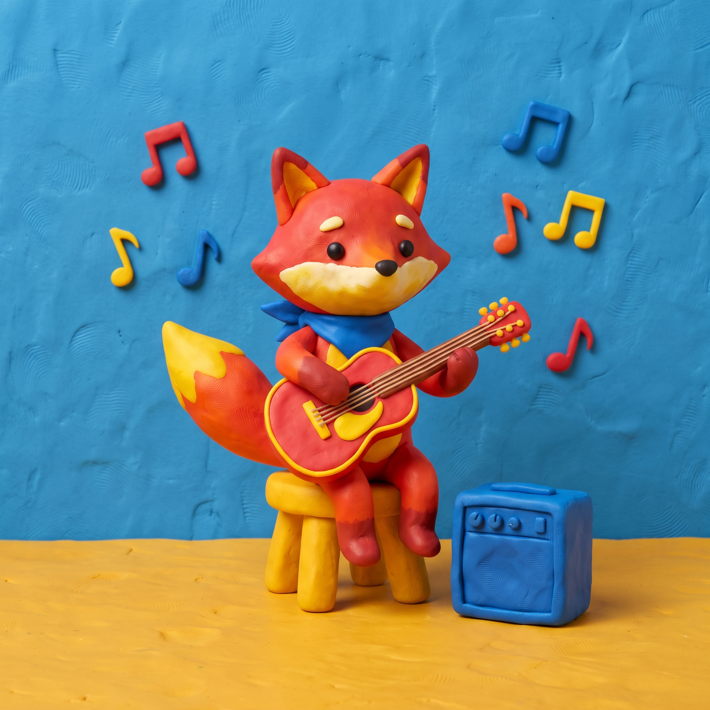
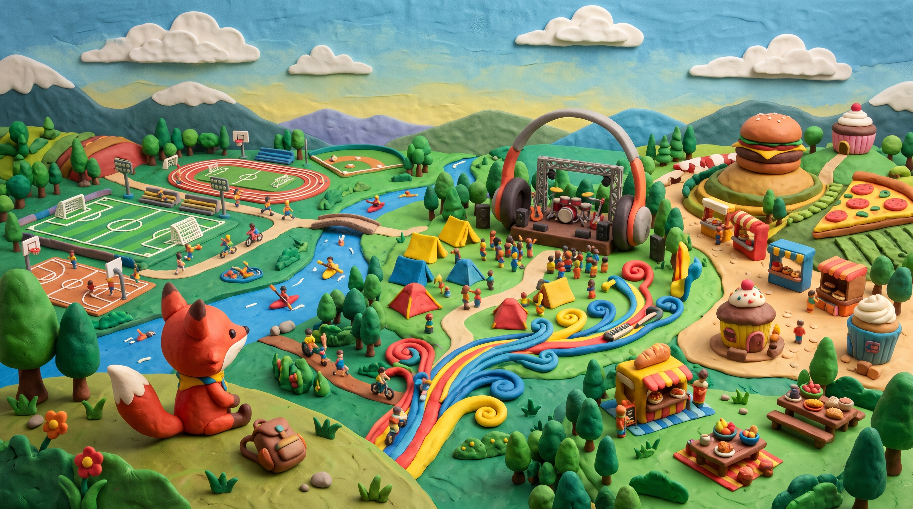
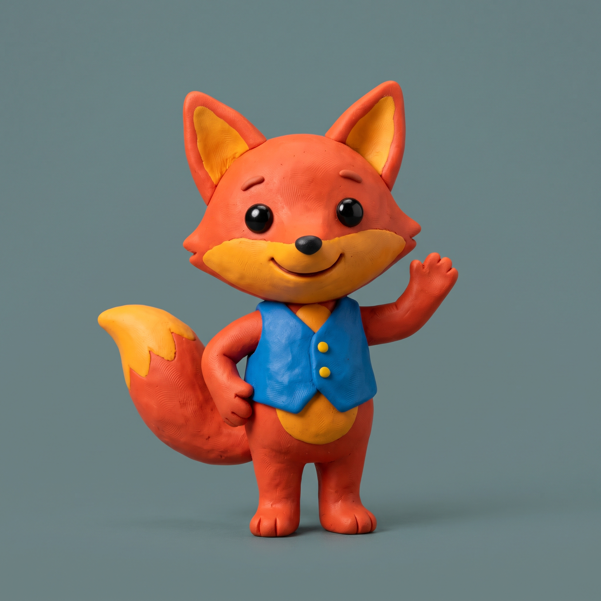
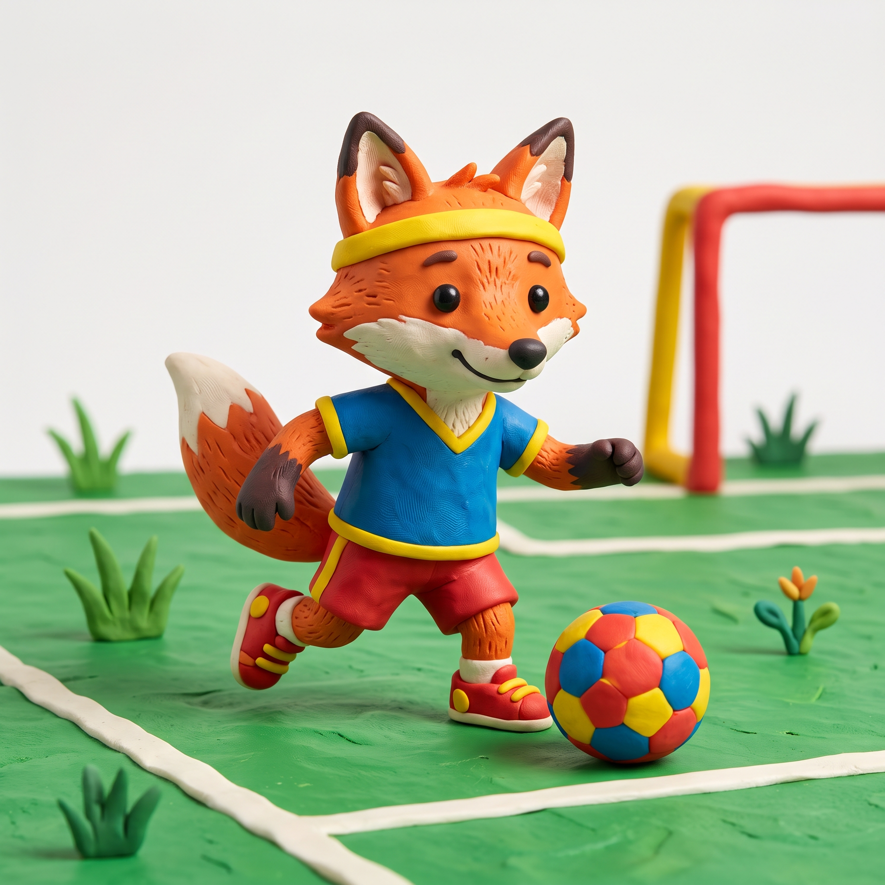
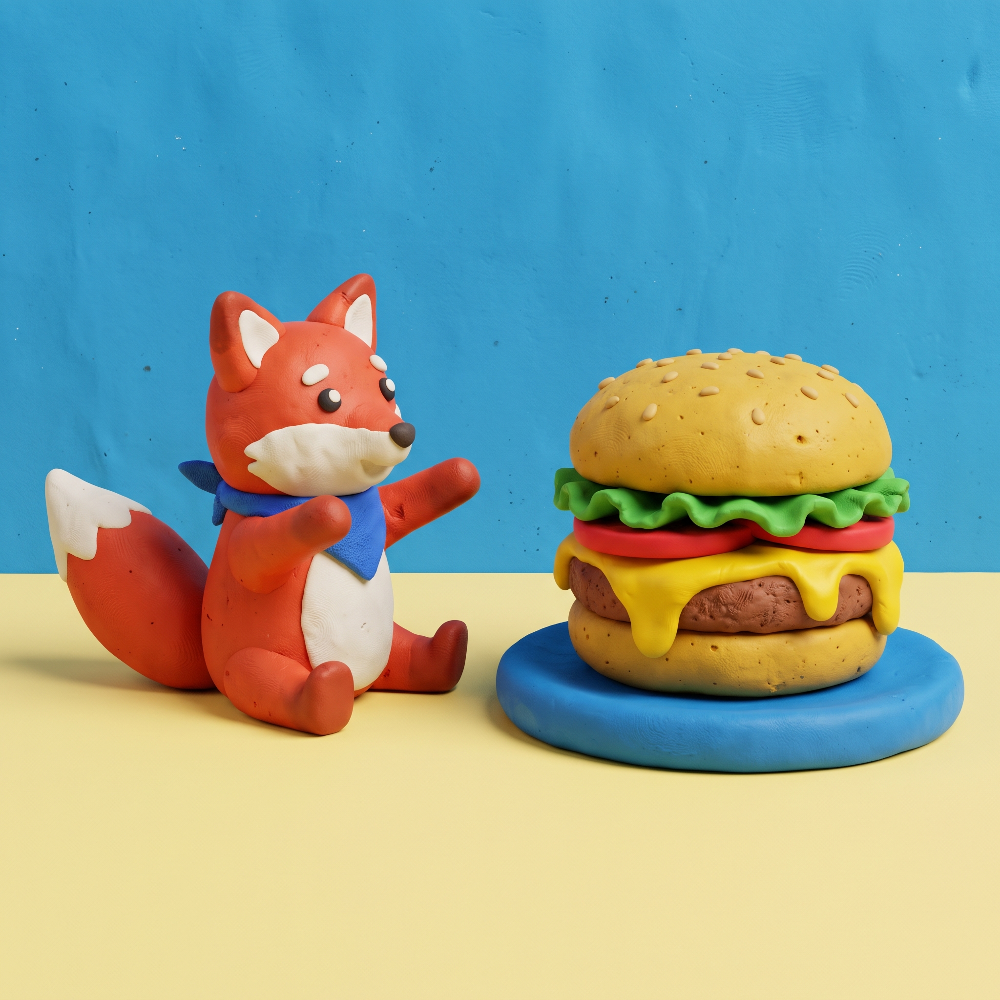

Müzik
Çalışırken ve dinlenirken bana eşlik eden farklı melodileri, akustik ritimleri ve yeni müzik tarzlarını keşfetmeyi seviyorum.
Yönetim Bilişim Sistemleri öğrencisi olarak teknoloji, kodlama ve yapay zekâ dünyasını tutkuyla keşfediyorum.


Yönetim Bilişim Sistemleri bölümünde lisans eğitimime devam eden hevesli bir öğrenciyim. Günlük hayatımda vaktimin büyük bir kısmını modern kodlama pratikleri ve üretken yapay zekâ teknolojileri üzerine yoğunlaşarak geçiriyorum. Teknolojiyi ve yeni yöntemleri sürekli araştırmayı, öğrenmeyi ve dijital projeler üretmeyi bir tutku haline getirdim.
Hayatıma ritim, enerji ve keyif katan vazgeçilmez tutkularım.

Çalışırken ve dinlenirken bana eşlik eden farklı melodileri, akustik ritimleri ve yeni müzik tarzlarını keşfetmeyi seviyorum.

Zinde kalmak, zihinsel odaklanmamı güçlendirmek ve dinamik bir enerjiye sahip olmak için düzenli spor yapıyorum.

Yeni tarifler denemek, farklı mutfak kültürlerini deneyimlemek ve lezzetli sofraları sevdiklerimle paylaşmak bana büyük keyif veriyor.
Projeler, teknoloji sohbetleri veya iş birliği fırsatları için dilediğiniz zaman bana ulaşabilirsiniz.